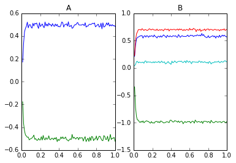
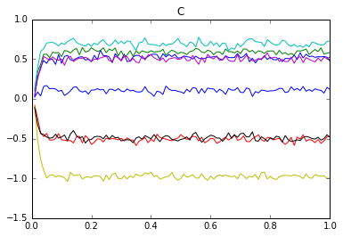
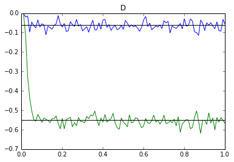

Nengo Example: Matrix multiplication¶
This example demonstrates how to perform general matrix multiplication using Nengo. The matrix can change during the computation, which makes it distinct from doing static matrix multiplication with neural connection weights (as done in all neural networks).
In [1]:
import numpy as np
import matplotlib.pyplot as plt
%matplotlib inline
import nengo
%load_ext nengo.ipynb
<IPython.core.display.Javascript object>
In [2]:
N = 100
Amat = np.asarray([[.5, -.5]])
Bmat = np.asarray([[0.58, -1.,], [.7, 0.1]])
# Values should stay within the range (-radius,radius)
radius = 1
model = nengo.Network(label='Matrix Multiplication', seed=123)
with model:
# Make 2 EnsembleArrays to store the input
A = nengo.networks.EnsembleArray(N, Amat.size, radius=radius)
B = nengo.networks.EnsembleArray(N, Bmat.size, radius=radius)
# connect inputs to them so we can set their value
inputA = nengo.Node(Amat.ravel())
inputB = nengo.Node(Bmat.ravel())
nengo.Connection(inputA, A.input)
nengo.Connection(inputB, B.input)
A_probe = nengo.Probe(A.output, sample_every=0.01, synapse=0.01)
B_probe = nengo.Probe(B.output, sample_every=0.01, synapse=0.01)
In [3]:
with nengo.Simulator(model) as sim:
sim.run(1)
plt.subplot(1, 2, 1)
plt.title('A')
plt.plot(sim.trange(dt=0.01), sim.data[A_probe])
plt.subplot(1, 2, 2)
plt.title('B')
plt.plot(sim.trange(dt=0.01), sim.data[B_probe]);

In [4]:
from nengo.dists import Choice
with model:
# The C matix is composed of populations that each contain
# one element of A and one element of B.
# These elements will be multiplied together in the next step.
# The appropriate encoders make the multiplication more accurate
C = nengo.networks.EnsembleArray(N,
n_ensembles=Amat.size * Bmat.shape[1],
ens_dimensions=2,
radius=1.5 * radius,
encoders=Choice([[1, 1], [-1, 1], [1, -1], [-1, -1]]))
# Determine the transformation matrices to get the correct pairwise
# products computed. This looks a bit like black magic but if
# you manually try multiplying two matrices together, you can see
# the underlying pattern. Basically, we need to build up D1*D2*D3
# pairs of numbers in C to compute the product of. If i,j,k are the
# indexes into the D1*D2*D3 products, we want to compute the product
# of element (i,j) in A with the element (j,k) in B. The index in
# A of (i,j) is j+i*D2 and the index in B of (j,k) is k+j*D3.
# The index in C is j+k*D2+i*D2*D3, multiplied by 2 since there are
# two values per ensemble. We add 1 to the B index so it goes into
# the second value in the ensemble.
transformA = np.zeros((C.dimensions, Amat.size))
transformB = np.zeros((C.dimensions, Bmat.size))
for i in range(Amat.shape[0]):
for j in range(Amat.shape[1]):
for k in range(Bmat.shape[1]):
tmp = (j + k * Amat.shape[1] + i * Bmat.size)
transformA[tmp * 2][j + i * Amat.shape[1]] = 1
transformB[tmp * 2 + 1][k + j * Bmat.shape[1]] = 1
print("A->C")
print(transformA)
print("B->C")
print(transformB)
with model:
nengo.Connection(A.output, C.input, transform=transformA)
nengo.Connection(B.output, C.input, transform=transformB)
C_probe = nengo.Probe(C.output, sample_every=0.01, synapse=0.01)
A->C
[[ 1. 0.]
[ 0. 0.]
[ 0. 1.]
[ 0. 0.]
[ 1. 0.]
[ 0. 0.]
[ 0. 1.]
[ 0. 0.]]
B->C
[[ 0. 0. 0. 0.]
[ 1. 0. 0. 0.]
[ 0. 0. 0. 0.]
[ 0. 0. 1. 0.]
[ 0. 0. 0. 0.]
[ 0. 1. 0. 0.]
[ 0. 0. 0. 0.]
[ 0. 0. 0. 1.]]
In [5]:
# Look at C
with nengo.Simulator(model) as sim:
sim.run(1)
In [6]:
plt.plot(sim.trange(dt=0.01), sim.data[C_probe])
plt.title('C');

In [7]:
with model:
# Now compute the products and do the appropriate summing
D = nengo.networks.EnsembleArray(N,
n_ensembles=Amat.shape[0] * Bmat.shape[1],
radius=radius)
def product(x):
return x[0] * x[1]
# The mapping for this transformation is much easier, since we want to
# combine D2 pairs of elements (we sum D2 products together)
transformC = np.zeros((D.dimensions, Bmat.size))
for i in range(Bmat.size):
transformC[i // Bmat.shape[0]][i] = 1
print("C->D")
print(transformC)
with model:
prod = C.add_output("product", product)
nengo.Connection(prod, D.input, transform=transformC)
D_probe = nengo.Probe(D.output, sample_every=0.01, synapse=0.01)
C->D
[[ 1. 1. 0. 0.]
[ 0. 0. 1. 1.]]
In [8]:
with nengo.Simulator(model) as sim:
sim.run(1)
In [9]:
plt.plot(sim.trange(dt=0.01), sim.data[D_probe])
for d in np.dot(Amat, Bmat).flatten():
plt.axhline(d, color='k')
plt.title("D");
